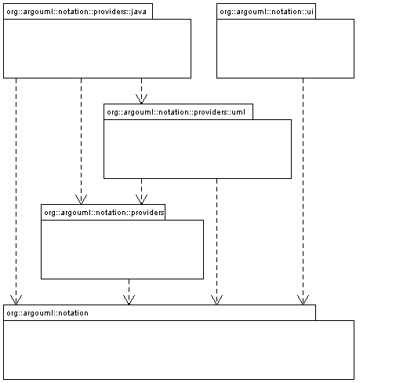
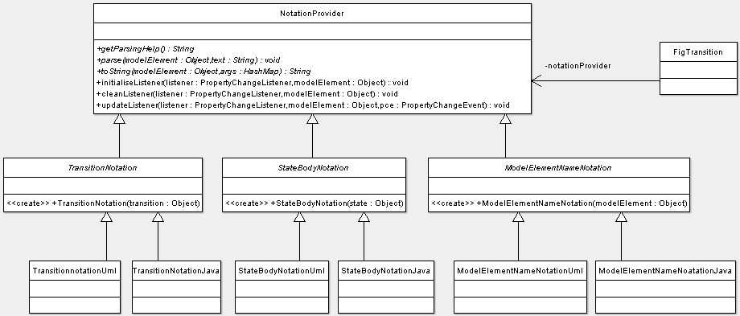
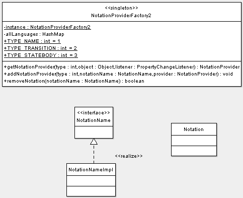

- Purpose
- To handle generating, updating and editing in different languages of a textual representation which represents one or more UML modelelements. Such a notation element gets e.g. attached to a diagram figure or an explorer entry.
- Located
org.argouml.notation and its sub-folders
- Layer
Figure: Notation subsystem part 1.

In the scope of issue 3140, the notation architecture has been discussed. Later, a change has been performed to resolve dependency cycles.
We decide that we support other languages than UML to show in diagrams, but this shall be a user-choice with project scope - and we will never refine the scope to something more detailed. Hence we need not store the notation language per Fig. So, this means that you can set the notation language in the project properties, and in the application-wide defaults.
The abstract class NotationProvider is at the center of the subsystem. There is an object extending the NotationProvider class per string (i.e. textual model representation) that is shown on the diagram: e.g. TransitionNotation, StateBodyNotation, ModelElementNameNotation. A state will show the latter 2.
This notation object would keep track of which UML objects it represents, generate and parse and provide a help text. Since the changes done for issue 6129, it also keeps track of its renderer, i.e. the Fig that implements the NotationRenderer interface, so that it can deliver an updated text when the model changes.
The Fig refreshes the text by calling the toString() method of the Notationprovider, at initialization time and whenever the notation changes (e.g. the notation language can change from UML to Java).
In case the model changes, the initiative for a rendering change lays with the NotationProvider. This works as follows: The notation object defines the set of model change events that it listens at. Putting this task into this Notation class (instead of the Fig) has the advantage that the knowledge to which UML objects to listen is centralized where it is needed, and not in the Fig. When the model changes, the Fig receives a call to its NotationRenderer.notationRenderingChanged function, and the Fig refreshes the rendering of its string. Additionally, the Notationprovider updates the set of model change listeners if needed.
Figure: Notation subsystem part 2.

The NotationProvider objects TransitionNotation, StateBodyNotation, etc. are abstract, since they are specialised in classes that implement them for a certain language, i.e. one per language. So, we will have: TransitionNotationUML, TransitionNotationJava, ... etc.
The NotationProviderFactory2 is a singleton, since it is the accesspoint for all Figs to create the textual representation of modelobjects, and since plugin modules can add extra languages. Once/if ArgoUML would support multiple projects, then we would need one NotationProviderFactory2 per project, since its language may differ per project.
The NotationProviderFactory2 creates a notation object on request for any Fig, based on the current notation language selected by the user for the current project. Hence, when the user changes the language (in the menu), then it is the Fig's responsibility to listen to the NotationEvent (hence the Fig shall implement ArgoNotationEventListener), and ask the NotationProviderFactory2 to create a new NotationProvider child.
Figure: Notation subsystem part 3.
